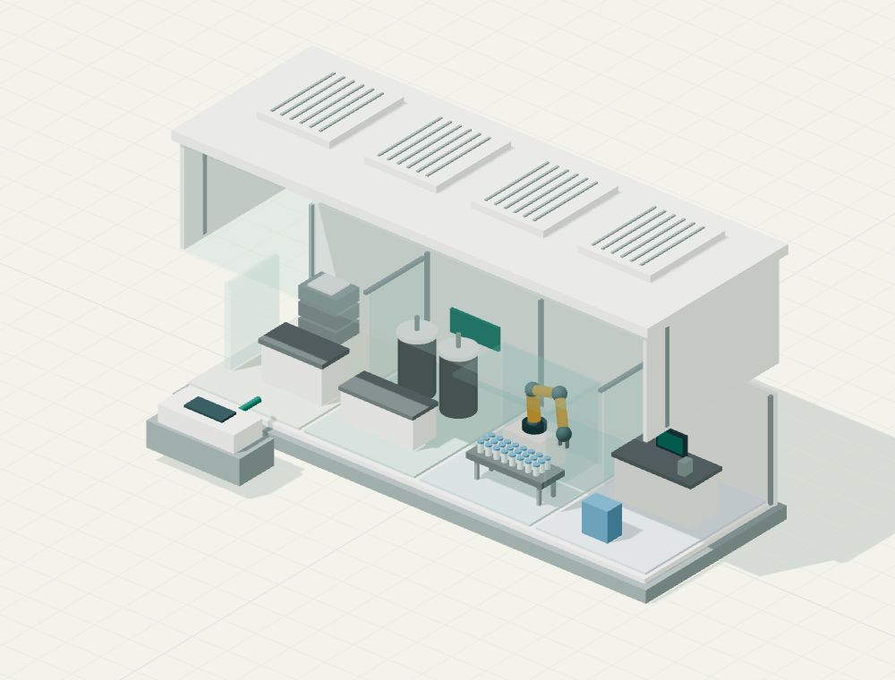

MODULAR MEDICINE MANUFACTURING
The factory
in the box.
Medicine travels. What if the factory did too?
Mark Cuban describes drug-making pods that can be shipped and linked together. The attraction isn’t just a smaller factory. It’s the possibility of putting production closer to the people who need it.
An independent explainer, not an official Cost Plus Drugs site.
The models are illustrations, not clinical or production guidance.

01 / INSIDE THE POD
Take a look inside.
Select a numbered station, or use the buttons to change the view.
02 / THE SCALE-OUT EXPERIMENT
Twice the pods. Twice the output?
Shared utilities on
200200
BOTTLENECK / PODS
The pods set the pace.
Your 2 working pods could supply 200 units. The checks can handle 240.
Would adding two more pods double what gets through?
This model shares utilities across all pods. Real plants may separate systems or provide backups.
03 / N-OF-1
One patient. What changes?
AN ESTABLISHED MEDICINE
One medicine, many patients.
With an established medicine, a qualified process can be used repeatedly. Each run still needs the right controls, records and checks.
FDA’s February 2026 framework is still draft guidance. These examples do not follow the same approval route.
04 / THE EVIDENCE